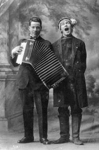
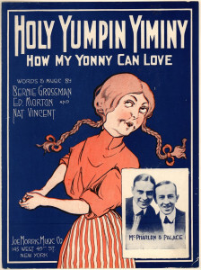

The American mid-West was a magnet for immigration from Scandinavia, and Minneapolis was where they came to buy snus (snuff) and Nordic newspapers, and be entertained in their own languages. Dania Hall in the Cedar-Riverside district offered music hall and variety in Norwegian, Swedish and Danish.
The main street in a Scandinavian neighborhood was known in those days as “Snoose Boulevard”. In Chicago that was Chicago Avenue; in St Paul, Payne Avenue; and in Minneapolis, Cedar Avenue.
The immigrants prospered and, as in so many immigrant neighborhoods, dispersed to wealthier suburbs. Rents in Cedar-Riverside remained low and the 1960s saw it colonised by students, artists, and hippies.
In the 1970s folklorist and musician Maury Bernstein organized in Cedar-Riverside the Snoose Boulevard Festival, a weekend-long revival and celebration of the songs popular along Cedar Avenue between the 1880s and early 1950s. There was dancing, and the street rang to the lively and melancholy songs of the Scandinavian pioneers.
The 1973 festival was carried on 102 National Public Radio stations throughout the U.S., and was broadcast on Swedish radio and television. Three LP collections were released:
Little remains of this today in Cedar-Riverside. The Cedar Cultural Center endures as a music venue but you are more likely to hear hip hop than “Hälsa Dem Därhemma”. The Acadia Café and other bars too remain live music venues. The current generation of immigrants is Somali. Snoose Boulevard is a fading memory, headed for university and folklore archives.
The Snoose Boulevard Project aims to celebrate that memory, and preserve the immigrants’ music for the enjoyment of future generations.
The project has the following aims:
Anne-Charlotte Harvey has access to the master recordings for the festival albums.
The University of Augsburg published on YouTube extracts from the festival album Return to Snoose Boulevard.
The American Swedish Institute in Minneapolis has eight boxes of material from Maury Bernstein’s estate:
Linda Gammell, a photographer, has color slides of the festival in her archive.

Olle i Skratthult in 1916 with accordionist Gustav Nyberg
Olle i Skratthult (roughly translated, “Olle from Laughtersville”), whose real name was Hjalmar Peterson, was America’s leading exponent of bondkomik, a uniquely Swedish variety of rustic comedy.
Born in Munkfors, Värmland, Feb. 7, 1886, he emigrated to America in 1906 and soon established himself as an entertainer. From about 1917 to 1933 Olle traveled the length and breadth of the U.S. with his Swedish-language “vaudeville” company of up to thirty singers, musicians, actors and dancers. Swedish-American vaudeville was not like its English-language counterpart. It was colorful, nostalgic and wholesome fun for all ages. It consisted of Swedish folk plays with olios, folk dancing, singing, recitations—and public old-time dancing at the end of the program.
Many of the most popular Scandinavian songs in America were introduced by the Olle i Skratthult Company: “Nikolina”, “Barndomshemmet”, and “Hälsa Dem Därhemma” are all on the first festival album.
Olle’s gentle comedy and captivating stage appearance were still fondly remembered by thousands of Scandinavian-Americans in the 1970s. He died in Minneapolis in 1960.
 Scandinavian vaudeville included songs in Swedish, Norwegian, Danish, – and English.
“Holy Yumpin Yiminy” (1918) was a product of New York’s Tin Pan Alley. It has fun with how Swedes often pronounced J in English words as they would in Swedish; that is, as a Y.
Holy Yumpin Yiminy
The mockery cannot conceal its affection, and on the first festival album, Memories of Snoose Boulevard, Harvey’s interpretation is boisterous and irrepressible.
Vocals Anne-Charlotte Harvey
Piano ?
Bass E. Craig Ruble
The Snoose Boulevard Project discussion group.
The following people want to see this project completed.
Stephen Benson
Stephen performed in variety at the festival and continues to teach comedy and bondhumor.
Mason Butler
Host, presenter and underwriting manager at KFAI radio in Cedar-Riverside. Butler interviewed Anne-Charlotte Harvey and Stephen Taylor on KFAI’s Global Beats program on 2019.09.18.
mason@kfai.org
Emmy Carter
Booking director at the Cedar Cultural Center.
ecarter@thecedar.org
Marcus Cederstrom
Community Curator of Nordic-American Folklore, Center for the Study of Upper Midwestern Cultures, Madison, WI.
cederstrom@wisc.edu
Stephen & Linda Gammell
Minneapolis residents of Norwegian descent. Stephen played guitar and piano at the festival and on the albums; Linda, a photographer, recorded it on color slides.
lindagammell@icloud.com
Parker Genné
Artist, storyteller, cabaret performer and co-founder of theater company Impossible Salt, Genné works with social-impact organisation Kairos Alive!
parkergenne@gmail.com
Paula Gudmundson
Assistant Professor of Music at the University of Minnesota in Duluth. Gudmundson has been featured on Minnesota Public Radio’s Regional Spotlight and in 2019, at the American Swedish Institute in Minneapolis, performed a program of music by Scandinavian women.
gudmu020@d.umn.edu
Anne-Charlotte Harvey
Professor Emerita, School of Theatre, Television and Film, San Diego State University. Harvey was the headliner of the Snoose Boulevard Festival concerts and the singer on the festival albums.
acharvey@sdsu.edu
Bruce Karstadt
Swedish consul, president and CEO of the American Swedish Institute in Minneapolis.
brucek@asimn.org
Peggy Korsmo-Kennon
Folklorist and Chief Operating Officer at the American Swedish Institute in Minneapolis. Korsmo-Kennon was a student of Maury Bernstein at the time of the festivals.
peggykk@asimn.org
Åsa Larsson
Swedish folk musician, choirmaster of the Women’s Virtual Choir, and kulning practitioner.
info@resmiranda.
Jim Leary
Center for the Study of Upper Midwestern Cultures, Madison, WI
jpleary@wisc.edu
Aar Maanta
London-based Somali musician commissioned in 2017 by the United Nations High Commissioner for Refugees to produce a song to spread awareness about the dangers of crossing to war-stricken Yemen through the Gulf of Aden and Red Sea from Africa. Artist-in-residence at the Cedar Cultural Center in 2018.
aarmaanta@googlemail.com
Seb Merrick
Artistic director of Kazum! and promoter of world music in London, England.
info@kazum.co.uk
Drew Miller
Drew was part of the team that put on the Nordic Roots festival in 2008, and can advise on web design, licensing, handling digital recording and events promotion.
drew@omniumdesign.com
Anna Rue
Community Curator, Center for the Study of Upper Midwestern Cultures, Madison, WI
rue@wisc.edu
Ross Sutter
Minneapolis musician, entertainer and creator of the Swedish Song Games and Dances website.
rosssutter@mac.com
Andrea Swensson
Andrea Swensson is a host and writer at Minnesota Public Radio’s The Current, where she helms The Local Show, a weekly show dedicated to exploring the Minnesota music scene, and the O.K. Show podcast, which investigates the intersection between music and wellness.
aswensson@mpr.org
Stephen Taylor
Writer, librarian and community activist in London, England. Taylor is a Fellow of the Royal Society of Arts.
stephentaylorfrsa@gmail.com
Mariann Tiblin
Former curator of the Scandinavian collection at the Wilson Library, University of Minnesota
tibl@umn.edu
Douglas Yeager
Entertainment producer with fifty years of experience in film, theatre, records, concert promotion, special events and artist management. His concert promotions included Ray Charles, Aretha Franklin, Chuck Berry, Genesis, Allman Bros, Lionel Hampton, Yes, and Little Feat. Yeager’s recent film productions include Free To Rock; David Amram: The First 80 Years; and Odetta (in production). His management clients have included: Odetta, Josh White, Josh White, Jr., David Amram, Richie Havens, Randy Crawford and Tom Paxton.
yeagerprod@aol.com